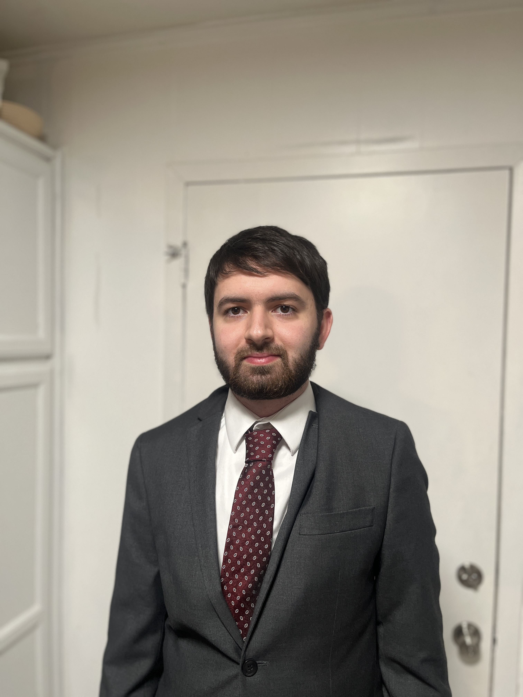

Ian Schraeder began his journey with Computer Science when he started learning Python and C# in gradeschool after being introduced to the study of computation by his father in Kindergarten, who had taken interest in the topic while studying Accounting but found himself ill fit for the growing field. He continued growing in both knowledge and interest of this field until in Junior High he began attending local Computer Science meetups in the Houston Area to get involved with people in the industry, and by Highschool he was working on projects utilizing C++ with the Unreal Engine, the QT Framework, Webassembly, Amazon databases and other technologies. In this time he learned the value of mentorship and hardwork in learning computer science and progressed greatly. When he entered the General Engineering program at A&M Galveston, he would catch up on CPPCon and continue to show his love of Computer Science while he fought for a 4.0 GPA to enter the highly competitive Computer Science program a semester ahead. Now studying Computer Science at Texas A&M University, he now formally studies various aspects of Computer Science, with a focus on Mathematics and Engineering. He has completed projects ranging from the web, to robotics, to video games and databases, all the way to computational linguistics (where he has contributed LUA code to the Wiktionary templates for the old Mercian and Northumbrian languages).
Friendly and confident, Ian is excited to find work in the technology industry, wheresoever his skills may be of benefit. Despite majoring in Computer Science, Ian has taken classes across several disciplines with a focus on mathematics and engineering, taking classes beyond the scope of his major in electrical engineering, partial differential equation and perterbuation theory, complex analysis, and fourier series. Being an Eagle Scout (an accomplishment which truely bears a mark upon the soul), he knows how to lead from behind, trusting in authority where authority lies, but taking charge just the same and leading within teams. He values professionalism in his written and oral communications alongside all manners of presentation. When not working at the Computer, Ian explores his passions regarding baking, music, the arts, and history, reflecting his high views of culture and humanity.